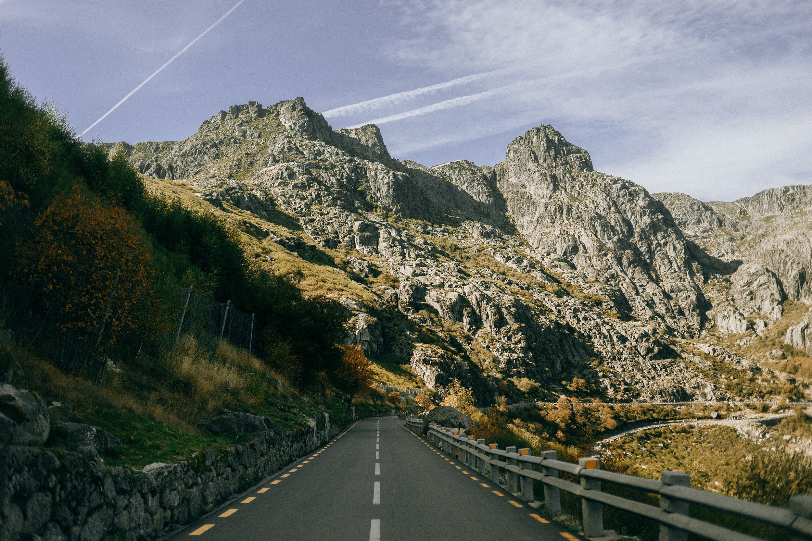
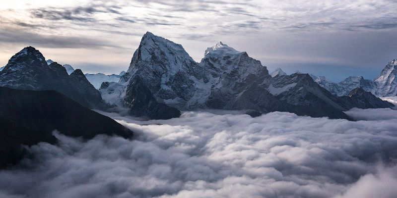

The Mountains
For us, the best mountains are those that capture the imagination of locals and visitors alike. The ones that have played a role in local folklore for centuries, and which continue to draw travelers from around the world today.
"With enough determination, any bloody idiot can get up this hill," Hall observed. "The trick is to get back down alive."
"With enough determination, any bloody idiot can get up this hill," Hall observed. "The trick is to get back down alive."
User videos
Popular Mountains

Elbrus
5,642 meters

Hoverla
2,061 meters

Everest
8,848 meters
Blog

Hoverla
In the 20th century the mountain increasingly gained popularity as an extreme sports site. Some routes are classified as 1A in the winter period (from late autumn to May), according to the Soviet grading system. Nowadays because of its prominence too many unskilled extreme-lovers are taking attempts to climb it in winter, resulting in regular frostbite or even deaths. The most popular approach to the summit starts from the tour-basa Zaroslyak on the mountain's east face and gains more than 3,600 vertical feet (1,100 meters) along a steep path with few switchbacks.
Read More

Everest
In the 20th century the mountain increasingly gained popularity as an extreme sports site. Some routes are classified as 1A in the winter period (from late autumn to May), according to the Soviet grading system. Nowadays because of its prominence too many unskilled extreme-lovers are taking attempts to climb it in winter, resulting in regular frostbite or even deaths. The most popular approach to the summit starts from the tour-basa Zaroslyak on the mountain's east face and gains more than 3,600 vertical feet (1,100 meters) along a steep path with few switchbacks.
Read More